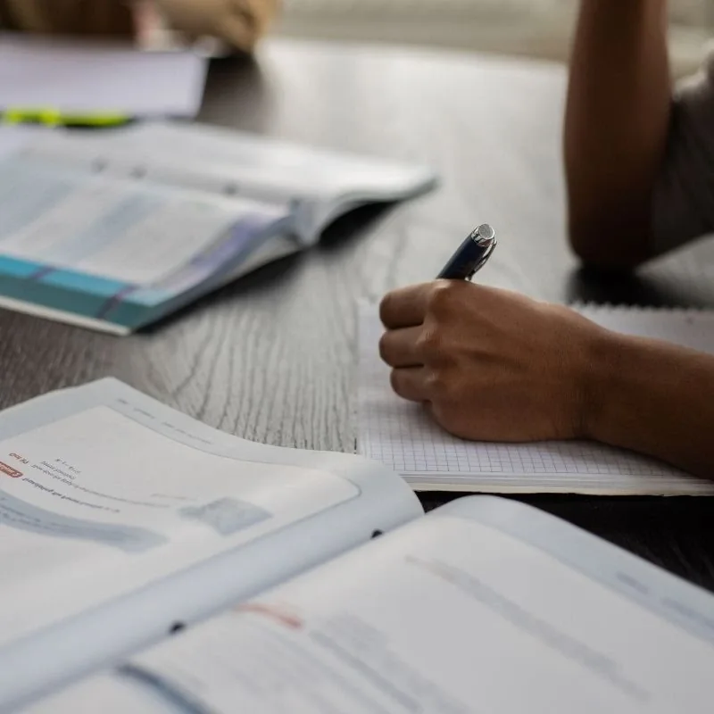

Online AS & A-Level tutors in South Wales
Specialist online support for students tackling more demanding subject knowledge, longer calculations, essay writing and exam technique in AS and A-Level qualifications.
Check tutor availabilityFind the right help with the topics that matter
Students learn at different speeds. Our tutors can adapt explanations, practice questions and revision to the knowledge gaps behind the difficulty.

Detailed support for demanding A-Level subjects
As topics become more abstract, students benefit from tutors who can slow down the reasoning and diagnose which concepts are missing. Sessions can combine explanation, worked examples and independent practice.
WJEC, AQA, OCR, Edexcel and other exam boards
Include your exam board, year group and specification or paper in the first enquiry. We then match a tutor to the requirements as closely as possible, subject to their expertise and schedule.
Plan around mocks, internal assessments and final exams
Some students need weekly consistency; others want focused support for a difficult unit. We can discuss a practical starting point and available lesson slots.
Supporting students in Cardiff, Swansea, Newport and beyond
Our service reaches pupils and sixth-formers across Cardiff, Swansea, Newport, Bridgend, Caerphilly, the Vale of Glamorgan, Rhondda Cynon Taf and wider South Wales. Lessons are online, with no travel needed.
Live teaching
Ask questions in real time and practise with a tutor.
Exam-board alignment
Bring the exact specification, school topics or papers.
Flexible booking
Arrange lessons subject to tutor availability.
Online AS and A-Level Maths, Physics and Sciences FAQs for South Wales
Quick answers about online tuition, WJEC and finding the right tutor.